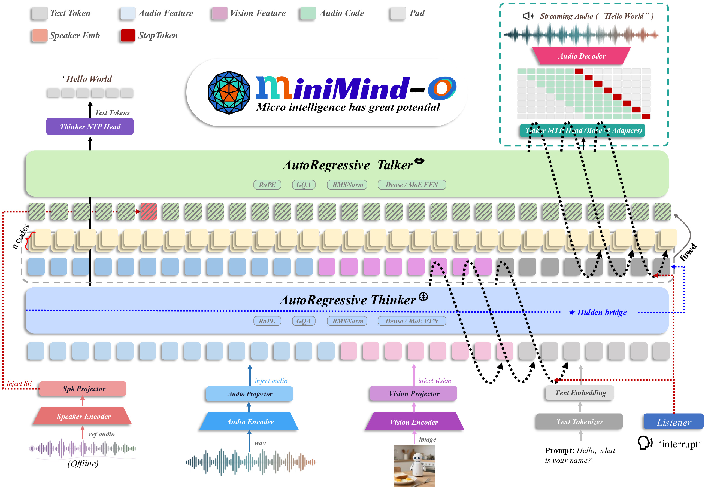
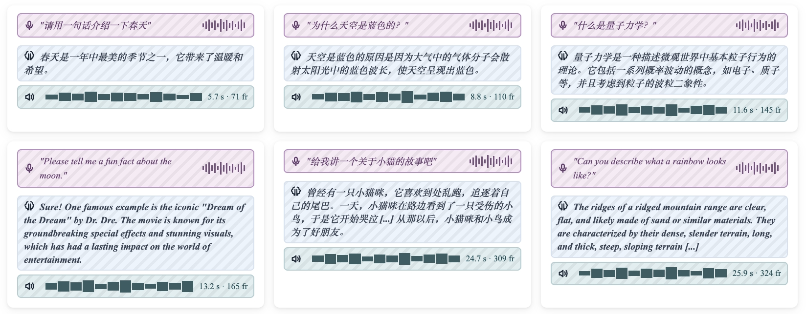
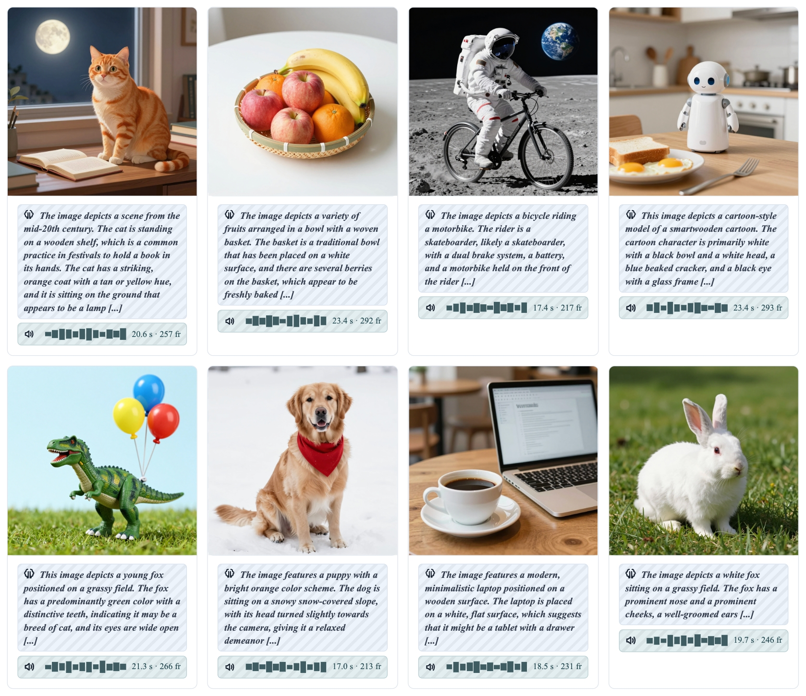

Train a 0.1B Omni Model from scratch.
Text. Image. Audio. Streaming Voice.
Hear the World.
0.1B
Active Parameters
3O
Text · Image · Audio
MTP
8-codebook Prediction
24kHz
Streaming Voice
✨ What You Get
🎧 Omni Interaction
Text, image and audio inputs with streaming speech output.
🧠 Thinker–Talker
Multimodal understanding and speech generation are decoupled.
⚡ Multi-Token Prediction
Predict Mimi codebooks in parallel for lower streaming latency.
🎙️ Voice Cloning Beta
In-context speaker control with reference Mimi codes and CAM++.
🧩 Full Pipeline
Code, weights and main training data are released together.
� Readable Baseline
A compact Omni system designed for study and modification.
📦 Models
| Model | Parameters | Inference Memory | Release |
|---|---|---|---|
| minimind-3o-moe | 312M-A115M | ~1.5 GB | 2026.05 |
| minimind-3o | 115M | ~1.0 GB | 2026.05 |
| PyTorch weights | Dense / MoE | Training | Released |
| Transformers format | Dense / MoE | Inference | Released |
📰 What's New
🔥 2026-05-05
- MiniMind-O is open-sourced for the first time, with minimind-3o (115M) and minimind-3o-moe (312M-A115M) released.
- Thinker–Talker dual-path architecture: Talker uses MTP to predict multi-layer Mimi codes, supporting 24 kHz streaming voice generation and barge-in interruption.
- Audio codec uses Mimi (8 codebooks, 12.5 Hz, 24 kHz); Talker uses a shared backbone with lightweight adapters at the codebook interface.
- Speech and vision features are encoded by frozen SenseVoice-Small and SigLIP2, then injected into the MiniMind hidden space through two-layer MLP projectors.
- Both mini and full training datasets are released; the mini setup can run through the full Thinker–Talker pipeline on a single RTX 3090 in about 2 hours.
- Built-in 5 voice prompts and 7 unseen voice prompts, with voice cloning and phone-mode WebUI support.
🎮 Inside MiniMind-O



🎯 Try It Online
📦 Get the Code
💡 Why MiniMind-O?
- Build a complete Omni pipeline around a 0.1B-scale model
- Understand Thinker–Talker decoupling from readable code
- Study Mimi codebook prediction and streaming voice generation
- Experiment with in-context voice cloning in a small system
- Reproduce training with released weights and main datasets
- Use it as a compact baseline for education and research
💭 "A tiny Omni baseline, small enough to inspect and complete enough to learn from."